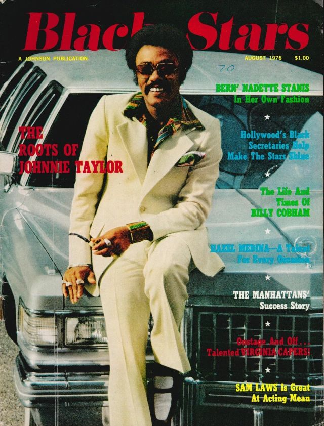

Ken timeline
de kens

60 's Ken
Ken werd geintroduceerd als Barbie's vriendje in 1961. Deze Ken pop was wel 30,5cm lang. Hij had plastic haar in blond en brunette en was gekleed in een rode zwembroek met een gele handdoek en sandalen. Speedo's are in!